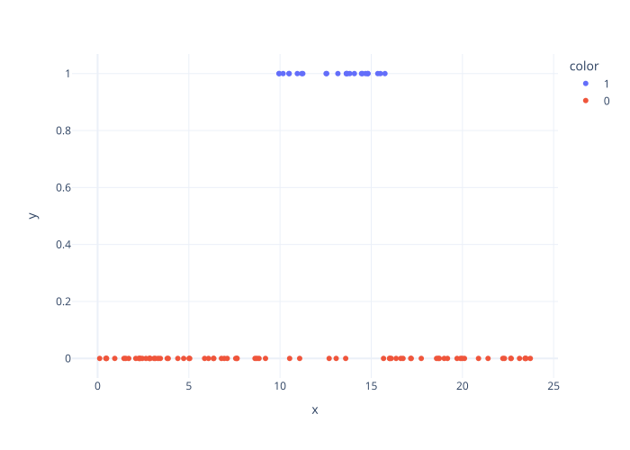
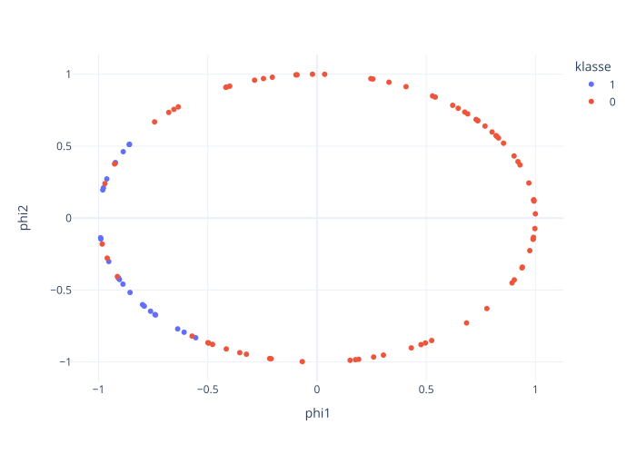

Manglende data og variabelutvinning
Contents
import numpy as np
import pandas as pd
import plotly.express as px
from sklearn.pipeline import make_pipeline, FeatureUnion
from sklearn.metrics import accuracy_score, mean_squared_error
from sklearn.model_selection import train_test_split
from sklearn.datasets import make_classification, make_friedman1
from sklearn.neighbors import KNeighborsClassifier
from sklearn.linear_model import Lasso
from sklearn.preprocessing import PolynomialFeatures
from sklearn.impute import SimpleImputer, KNNImputer, MissingIndicator
import plotly.io as pio
pio.renderers.default = "svg"
Manglende data og variabelutvinning#
Manglende data#
Manglende data er et vanlig problem og hvordan man håndterer det avhenger av årsakene til de manglende dataene og hvilken effekt det kan ha på analysen.
Det finnes mange forskjellige grunner for at data mangler. Data kan mangle på grunn av feil i systemet som samler inn eller lagrer informasjon. Dette kan skyldes feil i databasen, nettverksproblemer, eller programvarefeil. I noen tilfeller kan data være utilgjengelig på grunn av tilgangsbegrensninger. For eksempel kan sikkerhetsinnstillinger eller personvernregler forhindre visning av visse data. Hvis data ikke har blitt registrert eller samlet inn på riktig måte, kan det også føre til mangler. Hvis data blir lagt inn manuelt, kan menneskelige feil som utelatelse eller feilformattering føre til at data mangler. Det finnes også mange situasjoner hvor manglende data oppstår systematisk. For eksempel i en helseundersøkelse rapporterer bare personer med alvorlige symptomer sine helseproblemer, mens personer med milde symptomer ikke deltar. Noen respondenter i spørreundersøkelser unnlater å svare på spørsmål som oppleves som sensitive. Eller i en medisinsk studie kan kontrollgruppen som ikke får den eksperimentelle behandlingen, forlate studien hvis de mener de ikke får tilstrekkelig behandling.
Vi underdeler manglende data i tre typer avhengig av hvor tilfeldig det er at de mangler, data som mangler helt tilfeldig, mangler tilfeldig eller mangler ikke tilfeldig.
Data mangler helt tilfeldig hvis hendelser som fører til at et bestemt dataelement mangler er uavhengig av både observerbare og ikke-observerbare variabler. Det er det beste tilfelle. I så fall er det absolutt ingen informasjon i at data mangler. Det kan vi håndtere på mange forskjellige måter som vi kommer til å se på senere.
Data mangler tilfeldig hvis hendelser som fører til at et bestemt dataelement mangler er uavhengig av ikke-observerbare variabler. Her kan det være at det er mer sannsynlig at data mangler hvis en av de andre variablene tar visse verdier. Men det avhenger kun av variabler som vi observerer.
Data mangler ikke tilfeldig hvis hendelser som fører til at et bestemt dataelement mangler er avhengige av ikke-observerbare variabler. Dette er et stort problem og det er ikke alltid noe vi kan gjøre med det.
I neste seksjonen er det flere strategier for å håndtere manglende data samt beskrivelser i hvilken tilfeller vi kan bruke de. Når man står overfor manglende data i studier vet man ofte ikke om dataene mangler helt tilfeldig, tilfeldig eller ikke tilfeldig. I så fall kan det være utfordrende å analysere dataene riktig. Ofte prøver vi ut forskjellige metoder og ser på hvrodan de påvirker resultatene.
Håndtere manglende data#
Den beste metoden, som ikke alltid er tilgjengelig for oss er å finne data som manglet. Av og til er det mulig å få tak i det ved å spørre de som har lagd datasettet. Det er ikke sjeldent at data er tilgjengelige, men vi ikke har fått de. Eller at det finnes en annen kilde for de data som mangler. Denne løsningen er best, men kann ikke enkelt automatiseres og er ofte forbunnet med mye arbeid.
Ignorere manglende data#
Den første og mest brutale strategien for å håndtere data er ved å fjerne de fra datasettet. Av og til kan det være mer fornuftig å fjerne en kolonne som har veldig mye data som mangler. Det bør vi bare gjøre hvis data mangler helt tilfeldig.
Det gjør vi også hvis utfallet som vi prøver å predikere mangler. I så fall fjerner vi radene som mangler utfall. Hvis det er manglende verdier i data som vi vil predikere, så kan vi selvfølgelig ikke slette radene og la være å gi en prediksjon. I så fall må vi gjøre noe annet.
Imputasjon#
I så fall erstatter vi manglende data med nye verdier. Det kalles for imputasjon.
Imputasjon med fast verdi#
Den enkleste måten å imputere er ved å bruke en fast verdi. I noen tilfeller er det en neutral verdi, for eksempel i en spørreundersøkelse med mulige svar veldig dårlig, dårlig, verken dårlig eller bra, bra og veldig bra. I så fall kan vi erstatte manglende data med den neutrale verdien verken dårlig eller bra. Det finnes også for eksempel biologiske tester som kun klarer å måle svar i et visst område. For eksempel når vi prøver å måle hvor mange virer det er i blodet per milliliter blod. Mulige svar kan være mindre enn 1000 eller et tall større enn 1000. I så fall er mindre enn 1000 ofte registrert som mangler data, siden data ikke er numerisk. I så fall kan vi bruke et tall mindre enn 1000, for eksempel 500 for å erstatte alle manglende verdier.
Imputasjon med siste målte verdi#
I tidsavhengige data gir det av og til mening å anta at data ikke forandrer seg så rask. I så fall kan man se på den siste observasjonen som har data og videreføre den. Forsiktig, det kan vi kun gjøre hvis vi deler opp data i trenings-, validerings-, og testdata som respekterer rekkefølgen. Vi kan aldri bruke valideringsdata til å imputere verdier i treningsdata.
Imputasjon med middelverdi eller median#
En imputasjonsstrategi som ligner på imputasjon med fast verdi er middelverdi- eller medianimputasjon. Her erstatter vi altså ikke med en verdi som er valgt ut på forhånd, men med en verdi som er basert på data. Her igjen må vi være forsiktige og burke middelverdi eller median fra treningsdata for å erstatte manglende data i trenings-, validerings- og testdata. Det er ofte brukt for data som mangler helt tilfeldig.
Imputasjon med regresjonsmodell#
Til slutt så kan vi gjøre en regresjonsanalyse for å imputere manglende data. I utgangspunktet kan vi bruke hvilken som helst regresjonsmodell. Men hvis det er mye data som mangler og det er manglende data i mange variabler, så kan det bli vanskelig å gjøre det i praksis. En metode som fungerer og som er implementert i sklearn er å bruke de k nærmeste naboene til å lage en regresjonsmodell for imputasjon. Det er ofte brukt for data som mangler tilfeldig.
Flere imputasjoner#
En annen metode som av og til blir brukt, spesielt hvis det er mye data som mangler og imputasjon har en stor innvirkning på prediksjonene er å bruke flere imputasjoner. Det kan gjøres enten ved å bruke flere forskjellige imputasjonsstrategier eller ved å bruke en strategi som ikke bare gir den beste prediksjonen, men en sansynlighetsfordeling over mulige prediksjoner. I så fall kan vi trekke flere ganger fra denne sannsynlighetsfordelingen for å lage forskjellige datasett. Så kan vi lage en regresjons- eller klassifikasjonsmodell og en prediksjon for hver datasett. Til slutt kombinerer vi de forskjellige prediksjonene ved å for eksempel ta mean- eller median-verdien av alle prediksjonene.
Manglende data som variabel#
I tillegg til eller i stedt for å fylle manglende variabler inn, kan vi også lage en ny variabel som viser om den opprinnelige variablen manglet. Det er spesielt nyttig i tilfelle at data mangler ikke tilfeldig.
Modellutvalg og evaluering med manglende data#
Når det gjelder modellutvalg og evaluering, så gjelder det samme som alltid. For å lage modeller bruker vi kun treningsdata. Siden imputasjon kommer før selve modellen, kan vi også kun bruke treningsdata for å lage imputasjonsmodellen. Så kan vi velge ut hvilken kombinasjon av imputasjon og modell vi skal bruke basert på valideringsdata. Til slutt tester vi den endelige kombinasjonen med testdata.
Her er et eksempel med sklearn.
For å kombinere en imputasjonsstrategi med en klassifikasjonsmetode kan vi bruke make_pipeline. Her har vi kombinert mean-imputasjon med K-nærmeste nabo klassifikasjon. Når vi har lagd denne kombinerte modellen, så kan vi bruke den som vi har sett før med fit- og predict-metodene. Den gjør det automatisk riktig at bare data som er i fit-metoden blir brukt til å finne mean og samme mean blir brukt til å imputere for valideringsdata i predict-metoden.
rng = np.random.RandomState(0)
X, y = make_classification(n_samples=500, random_state=0)
mask = rng.randint(0, 2, size=X.shape).astype(bool)
X[mask] = np.nan
X_train, X_valtest, y_train, y_valtest = train_test_split(
X, y, test_size=0.3, random_state=0)
X_val, X_test, y_val, y_test = train_test_split(
X_valtest, y_valtest, test_size=0.5, random_state=0)
model = make_pipeline(SimpleImputer(strategy='mean'),
KNeighborsClassifier(n_neighbors=50))
model.fit(X_train, y_train)
prediction = model.predict(X_val)
accuracy_score(y_val, prediction)
0.68
Her gjør vi det samme med en k-nærmeste nabo imputasjonsmodell. Den eneste forskjellen mellom denne koden og den forrige er at vi har byttet ut SimpleImputer med KNNImputer.
model = make_pipeline(KNNImputer(n_neighbors=50),
KNeighborsClassifier(n_neighbors=50))
model.fit(X_train, y_train)
prediction = model.predict(X_val)
accuracy_score(y_val, prediction)
0.76
Antall nabor i kNN-modellen er igjen en hyperparameter. Hyperparameteroptimisering fungerer på akkurat samme måte som for modeller vi har sett til nå.
En annen ting vi kan gjøre i tillegg til å impute manglende data er å legge til en kolonne for hver variabel som tilsier om variablen manglet før imputasjonen. Vi kan bruke klassen MissingIndicator til å gjøre dette med sklearn. For å kombinere både imputede data og indikatorer om de mangler kan vi bruke FeatureUnion-klassen. Så lager vi en pipeline der vi kombinerer denne måten å transformere data med en klassifikasjonsmodell. Igjen brukes modellen akkurat som før.
transformer = FeatureUnion(
transformer_list=[
('features', KNNImputer(n_neighbors=50)),
('indicators', MissingIndicator())])
model = make_pipeline(transformer,
KNeighborsClassifier(n_neighbors=50))
model.fit(X_train, y_train)
prediction = model.predict(X_val)
accuracy_score(y_val, prediction)
0.7466666666666667
Her ser vi at i dette tilfelle førte det til litt dårligere resultater enn før vi la til indikatorene. Det gir mening, siden våre data manglet helt tilfeldig. Hvis de ikke mangler tilfeldig, så kan en sånn indikator hjelpe mye for å forbedre prediksjoner.
Variabelutvinning#
Variabelutvinning, eller feature extraction på engelsk, er prosessen med å hente ut eller konstruere relevante variabler fra rådata for å bruke i modeller. Målet med variabelutvinning er å transformere rådata til et format som bedre kan brukes til modellering, og som kan forbedre modellens ytelse, generaliseringsevne og tolkning. Variabelutvinning innebærer at data scientist, basert på domenekunnskap, konstruerer variabler som kan gi nyttig informasjon for modellen. Variabelutvinning kan i stor grad påvirke kvaliteten på en modeller. Godt utvalgte og konstruerte variabler kan øke modellens prediksjonsnøyaktighet, redusere risikoen for overtilpasning og gjøre modellen mer tolkningsbar og brukbar for beslutningstaking.
Vi har allerede sett noen eksempler av variabelutvinning. Polynomregresjon er en kombinasjon av å lage polynomiale variabler og en lineær regresjonsmodell.
Et annet eksempel som vi allerede har sett er når vi har kategoriske data. Der lager vi dummy-variabler for hver kategori. Ved å bruke sklearn sin OneHotEncoder kan vi lage nye variabler. Vi kunne også brukt pandas sin get_dummies metode, men OneHotEncoder er mer fleksibelt og kan fungere også hvis testdata inneholder klasser som ikke var med i treningsdata.
Det finnes mange forskjellige måter å utvinne nye variabler fra eksisterende variabler. Vi er bare limitert av tid og kreativitet. I praksis må vi bruke domenekunnskap for å gjøre det på en fornuftig måte. Her viser vi noen eksempler der nye variabler kan øke prediksjonsevnen til modeller.
Eksempel 1. Forholdstall
Bruk av forholdstall (ratio) mellom to variabler i en modell kan være svært nyttig, spesielt når man ønsker å fange opp relative forskjeller eller normalisere for størrelser som påvirker resultatene. I økonomisk analyse kan du bruke forholdet mellom en bedrifts gjeld og egenkapital for å få et mål på hvor finansielt risikabel bedriften er. Absolutt gjeldsnivå alene kan gi mindre mening uten å vite hvor mye egenkapital bedriften har for å støtte gjelden. Eller hvis du har data om antall produsert enheter og produksjonstid, kan ratioen av antall enheter per tidsenhet være et bedre mål på produktivitet enn bare å se på antall enheter eller tid alene, siden det tar hensyn til variabiliteten i produksjonstid.
Vær oppmerksom på at ratio-beregninger kan bli problematiske når en av variablene er null. Dette krever enten håndtering av nullverdier eller bruk av en liten konstant for å unngå deling på null.
Eksempel 2. Aggregere
Å aggregere data før analyse kan være svært nyttig i mange situasjoner, spesielt når rådata inneholder svært detaljerte observasjoner som kan være vanskelige å tolke direkte eller føre til støy i analysen. Ved å aggregere data, kan man oppnå bedre innsikt og gjøre analysen mer oversiktlig og relevant. Et eksempel på en situasjon der aggregering av data er nyttig er når vi analyserer salgsdata for en kjede av butikker, hvor vi har detaljerte transaksjonsdata. For hver enkelt transaksjon har vi informasjon som tidspunkt for kjøp, butikkens lokasjon, produkt, antall solgte enheter og pris per enhet.
I stedet for å analysere hver enkelt transaksjon, kan vi aggregere dataene etter tidsintervaller, for eksempel daglige eller ukentlige totalsalg for hver butikk. Dette reduserer datamengden og gir en bedre forståelse av salgsvolumene over tid. Vi kan også aggregere salgsdata per region for å forstå hvordan forskjellige lokasjoner presterer. I stedet for å analysere hver enkelte produkt, kan vi aggregere salget til produktkategorier, for eksempel elektronikk, klær, matvarer osv. Dette kan gi et mer oversiktlig bilde av hva som selger mest.
Fordeler med aggregering i dette eksempelet er redusert kompleksitet og bedre identifikasjon av overordne mønstre som skuler seg i detaljene.
Eksempel 3. Forsinkede variabler
En vanlig transformasjon for tidsrekkedata er å lage forsinkede variabler (lag features). Hvis vi for eksempel vil predikere strømpris i morgen, kan prisen i dag og de siste dagene være nyttige prediktorer. Vi lager da nye variabler som er tidsrekken forskjøvet ett eller flere tidssteg bakover.
X = range(5)
y = 5 + rng.normal(size=5)
df = pd.DataFrame()
df['pris'] = y
df['pris_forrige_dag'] = df['pris'].shift(1)
df['pris_for_to_dager_siden'] = df['pris'].shift(2)
df
| pris | pris_forrige_dag | pris_for_to_dager_siden | |
|---|---|---|---|
| 0 | 3.578096 | NaN | NaN |
| 1 | 4.063991 | 3.578096 | NaN |
| 2 | 4.803443 | 4.063991 | 3.578096 |
| 3 | 4.425012 | 4.803443 | 4.063991 |
| 4 | 5.750483 | 4.425012 | 4.803443 |
Merk at de første radene vil få manglende verdier etter denne operasjonen, siden det ikke finnes observasjoner fra «før starten» av tidsrekken.
Eksempel 4. Periodisitet
Et annet typisk eksempel er når vi har periodisitet i data. Det skjer ofte når data har en dags- eller årsrytme. I så fall kan det være bedre å transformere tidsvariabelen på en sirkel og bruke x- og y-variablen av sirkelen for å modellere.
Hvis data er tid \(x\) med periodisitet \(L\), ser altså på \(\phi_{1}( x ) = \cos \left( \frac{2 \pi x}{L} \right)\) og \(\phi_{2}( x ) = \sin \left( \frac{2 \pi x}{L} \right)\) i stedet. For dagtid vil vi bruke \(L=24\), for uker bruker vi \(L=7\) osv.
rng = np.random.RandomState(0)
N = 100
X = rng.uniform(0, 24, N)
y = pd.Categorical(rng.binomial(n=1, p=np.logical_and(X > 8, X<16) * 0.8, size=N))
fig = px.scatter(x=X, y=y, color=y)
fig.update_layout(template='plotly_white')
fig.show()

For eksempel i denne figuren ser vi på noen tidspunkt i løpet av dagen. Det ser ut som om klasse 1 kun skjer på dagtid. Men for å skille mellom klassene må vi ha en kompleks modell. I tillegg er det ikke åpenbart direkte fra data at kl. 23:59 og kl. 00:01 ligger i nærheten av hverandre.
phi1 = np.cos(2*np.pi*X/24)
phi2 = np.sin(2*np.pi*X/24)
fig = px.scatter(x=phi1, y=phi2, color=y)
fig.update_layout(template='plotly_white', xaxis_title="phi1", yaxis_title="phi2", legend_title_text='klasse')
fig.show()

Når vi har omformattert data til en sirkel er det mye enklere å skille de to klassene med en lineær modell. Det fikser problemet med at det er en diskontinuitet mellom klokkeslett 23:59 og 00:01.
Hvis data er en vinkel har vi akkurat det samme problemet der 359 grad og 1 grad egenlig burde være ved siden av hverandre men ikke er det. Der også kan vi heller se på data på en sirkel for å ungå problemet.
Variabelutvalg#
Det er sånn at jo flere variabler vi har med jo vanskeligere blir det å skille mellom signal og støy. Derfor er det ofte lurt å ikke ta med alle variablene i modellene. Måten å velge ut hvilke variablene å ha med i modellen er akkurat lik som modellutvalg. Vi trener modeller med forskjellige variabler på treningsdata. Så velger vi ut hvilken modell med hvilke variabler som fungerer best på valideringsdata. Det er bare den beste som vi til slutt sjekker generaliseringsevnen på testdata.
Men vi kan ofte ikke teste alle mulige kombinasjoner av variabler. Her kan vi enten bruke domenekunnskap for å velge ut meningsfulle variabelkombinasjoner for å teste ut. Men det finnes også en automatisk måte å velge ut variabler. Det heter lasso regularisering.
Her bruker vi polynomregresjon som eksempel. Vi ser på samme datasettet som før og finner at selv om vi bruker for høy polynomgrad, så kan vi kompensere for det ved å bruke Lasso-regresjon.
X, y = make_friedman1(random_state=42, n_features=5)
X_train, X_valtest, y_train, y_valtest = train_test_split(X, y, train_size=0.7, random_state=0)
X_val, X_test, y_val, y_test = train_test_split(X_valtest, y_valtest, test_size=0.5, random_state=0)
# lage modell
model = make_pipeline(PolynomialFeatures(degree=20), Lasso(alpha=0.01, max_iter=5000))
# tilpasse modell
model.fit(X_train, y_train)
# prediksjon på valideringsdata
prediction = model.predict(X_val)
# beregn gjennomsnittlig kvadrert feil på valideringsdata
print('MSE:', np.round(mean_squared_error(y_val, prediction), decimals=2))
MSE: 0.31
I dette tilfelle blir ikke det like bra som med vanlig 4-grads-polynomregresjon, men det blir mye bedre enn vanlig 20-grads-polynomregresjon.